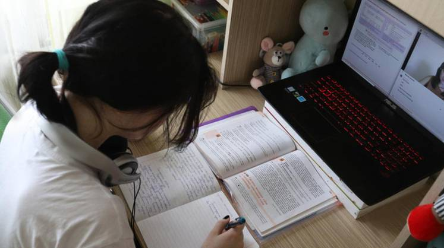

В Минздраве выяснили, что дистанционное обучение подорвало здоровье 80% российских школьников
Из открытых источников

Как следует из опроса НМИЦ здоровья детей Минздрава РФ, 80% российских школьников столкнулись с проблемами с психикой после самоизоляции и дистанционного обучения, которые были введены во время распространения коронавирусной инфекции.
«У 83,8% школьников появились неблагополучные психические реакции», - говорится в опросе.Также во время вынужденной изоляции у учащихся стали появляться депрессивные и астенические состояния, пишет РБК, ссылаясь на исследователей.
70% детей школьного возраста стали реже гулять, каждый второй учащийся стал жаловаться на головные боли, а также плохой сон.37% детей отметили появление нервных фобий, более 50% школьников жалуются на резкую смену настроения.
В опросе сообщается, что только немногим более 10% учащихся перенесли дистанционное обучение без ущерба для психики.
Ранее врач Александр Мясников сообщил, что россияне должны радоваться росту случаев коронавируса, поскольку, чем больше людей переболеют в легкой форме или бессимптомно, тем быстрее образуется стадный популяционный иммунитет.Медик также сообщил, что число положительных тестов будет только расти, так как коронавирус никуда не уйдет.Также не стоит зацикливаться на статистике, а больше внимание следует уделить тяжелым случаям и смертности, что позволяет судить о степени опасности коронавируса.
Также Мясников считает, что в России переболело ковидом около 20 миллионов жителей, в этой связи стоит надеяться, что года через два-три сформируется коллективный иммунитет.
Posted On: 2020-09-13T21:00:00
Content Date: 2020-09-13
Download Date: 2021-04-21
Document ID: L0C04AOC7